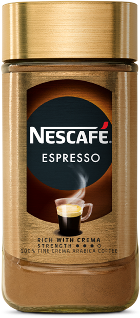
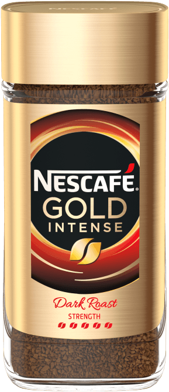
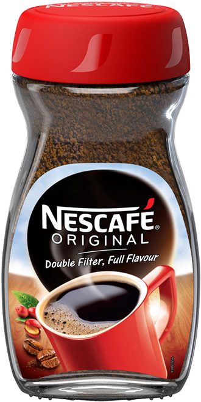
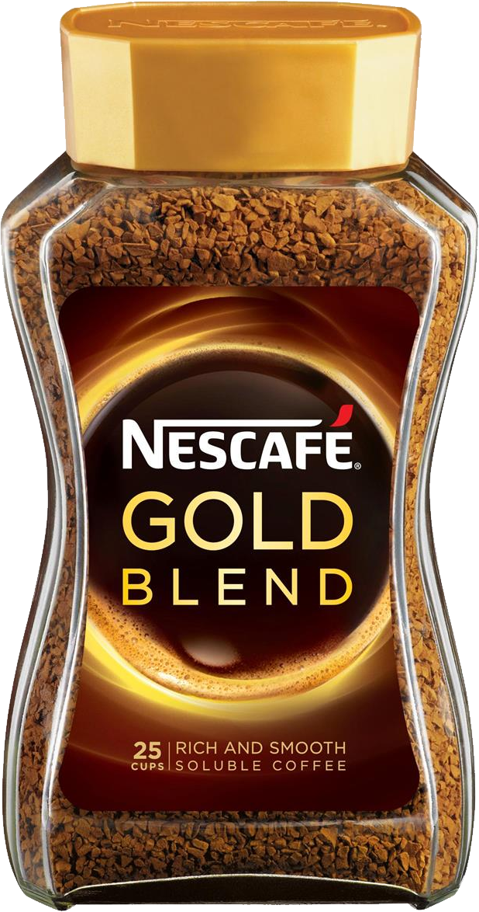
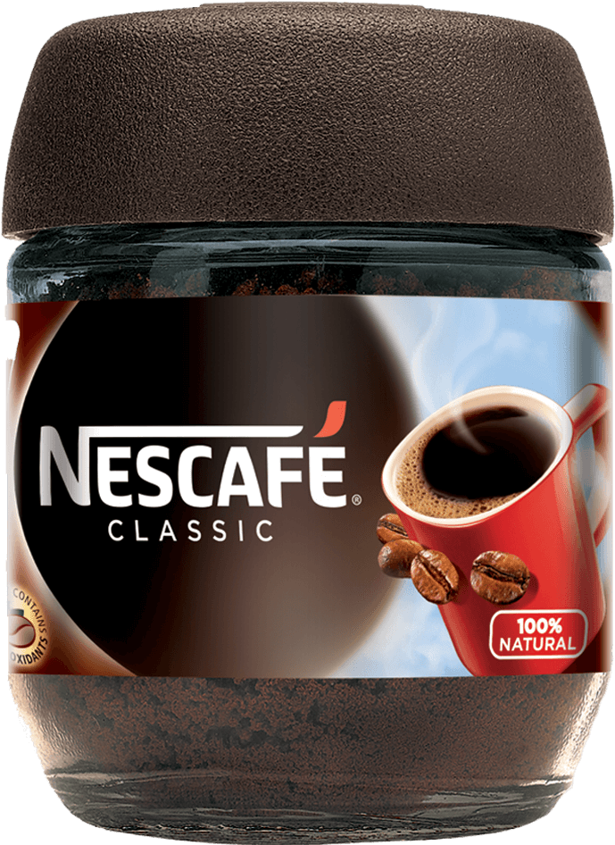
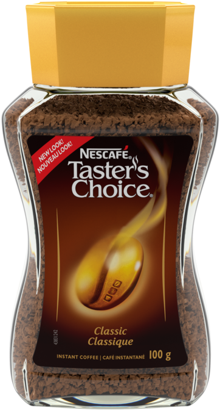

Nescafe Classic
The unmistakable full-flavour of Nescafe Classic is what makes our
signature coffee so loved all over the world. Savour the wonderfully rich and refreshing
aroma of this medium-dark roast.

Nescafe Espresso
Elevate your coffee game with Nescafe Espresso. This premium instant
coffee is made from high-quality, responsibly sourced coffee beans that are expertly roasted
and ground to perfection. Each sip delivers a bold, rich and full-bodied espresso flavor,
with a distinct aroma that will wake up your senses. Try it today and taste the difference.

Nescafe Gold Intense
The unmistakable full-flavour of NESCAFÉ® Classic is what makes our
signature coffee so loved all over the world. Savour the wonderfully rich and refreshing
aroma of this medium-dark roast.

Nescafe Original
The unmistakable full-flavour of NESCAFÉ® Classic is what makes our
signature coffee so loved all over the world. Savour the wonderfully rich and refreshing
aroma of this medium-dark roast.

Nescafe Gold Blend
Introducing Nescafe Gold, the premium instant coffee experience. Made
with only the finest, expertly roasted and ground coffee beans, Nescafe Gold delivers a
rich, smooth and full-bodied flavor that will elevate your morning cup of coffee to the next
level. Whether you're in a hurry or taking a moment to relax,
Nescafe Gold is the perfect choice for coffee lovers everywhere. Try it today and experience
the difference.

Nescafe Classic Small
The unmistakable full-flavour of NESCAFÉ® Classic is what makes our
signature coffee so loved all over the world. Savour the wonderfully rich and refreshing
aroma of this medium-dark roast. Try it now in a smaller and more portable package.

Nescafe Taster's Choice
Start your day off right with a delicious cup of NESCAFÉ Taster's
Choice! Made from 100% pure, responsibly-sourced coffee beans, our instant coffee is perfect
for busy mornings or on-the-go. Try it today and
experience the rich, satisfying flavor of real coffee in an instant

 Explore our range
Explore our range